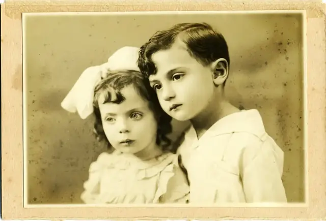

לזכרם האהוב
סוניה ואמיר פלוט
עמוד זיכרון מכבד לסוניה ואמיר פלוט — מקום למילים, לתמונות ולזיכרון המשפחתי שנשמר אחריהם.
אמיר פלוט ז״ל · 7.7.1926–1.4.2025
סוניה פלוט לבית רוזנבלט ז״ל · 12.6.1933–27.5.2025

זיכרון שנשמר דרך משפחה, קהילה ותמונות מתוך האלבום.
רצועת זיכרון
בשנת 1952 עלו אמיר וסוניה ארצה עם הגרעין השלישי לברור חיל. לאחר הכשרה בקיבוץ תל יוסף הגיעו לברור חיל, ושם נבנו חייהם, משפחתם וזיכרונם המשותף.
סוניה
סוניה לבית רוזנבלט נולדה בבאטאטאיס שבברזיל.
אמיר
אמיר פלוט נולד בשנת 1926, ובהמשך היה פעיל בתנועה בברזיל.
עלייה ארצה
סוניה ואמיר עלו לארץ עם הגרעין השלישי לברור חיל.
הכשרה
עם הגעתם לארץ עברו הכשרה בקיבוץ תל יוסף.
בית ומשפחה
בהמשך הגיעו לברור חיל, המקום שנקשר בחייהם ובזיכרון המשפחתי.
דברי פרידה
שני מסמכי פרידה משפחתיים, כפי שנמסרו עבור העמוד.
רגעים שנשמרו
תמונות נבחרות מתוך האלבום. לצפייה בכל התמונות ניתן לפתוח את הגלריה המלאה.


